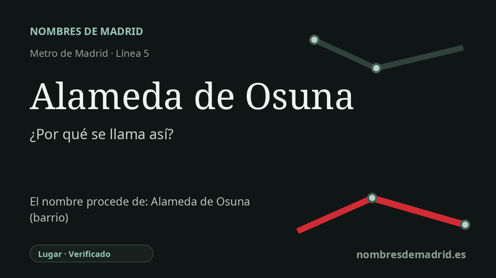

Publicado el · Investigación de Nombres de Madrid · Cómo verificamos cada origen · 8 fuentes consultadas
Respuesta rápida
La estación de Alameda de Osuna toma su nombre del barrio de Barajas al que da servicio. El nombre del barrio conserva la memoria de la antigua Alameda y de la finca de recreo impulsada por los duques de Osuna, especialmente el jardín de El Capricho creado por María Josefa Alonso Pimentel.
La historia del nombre
La estación de Alameda de Osuna toma su nombre del barrio que la rodea, en el distrito de Barajas. El nombre de transporte es, por tanto, directo: la línea 5 termina aquí porque la prolongación de 2006 se construyó para dar servicio al área residencial conocida como Alameda de Osuna.
El topónimo antiguo es más rico. Una *alameda* es un sitio poblado de álamos y, por extensión, un paseo arbolado; en este caso el término quedó unido a un paisaje de finca nobiliaria. La parte 'Osuna' remite a los duques de Osuna, cuya casa de campo y cuyos jardines contribuyeron a fijar el nombre de la zona.
La historia municipal del cercano Castillo de la Alameda explica que este territorio se situaba entre las aldeas medievales de La Alameda y Barajas. Allí se levantó en el siglo XV un castillo señorial, transformado después en palacio renacentista, y entre los siglos XVI y XVIII aparecieron villas de veraneo de la aristocracia madrileña, entre ellas el palacete de los duques de Osuna y El Capricho; desde ese contexto, el área pasó a conocerse como Alameda de Osuna.
La figura clave para la memoria cultural del nombre es María Josefa Alonso Pimentel, condesa-duquesa de Benavente y duquesa consorte de Osuna. El Ayuntamiento describe El Capricho como creación personal suya y señala que compró la finca y terrenos colindantes entre 1783 y 1803. El Prado muestra además por qué el lugar trasciende la geografía local: los duques fueron primeros mecenas de Goya, que retrató a la familia y más tarde les vendió seis lienzos de 'asuntos de brujas' para su casa de campo de La Alameda.
La estación se inauguró con este nombre el 24 de noviembre de 2006, al entrar en servicio la prolongación de la línea 5 desde Canillejas hasta Alameda de Osuna. No se ha localizado una etimología alternativa creíble. La cautela principal es de formulación: la estación no está dedicada directamente a la duquesa como persona, sino al barrio cuyo nombre procede del paisaje de la Alameda y de la finca de los Osuna.